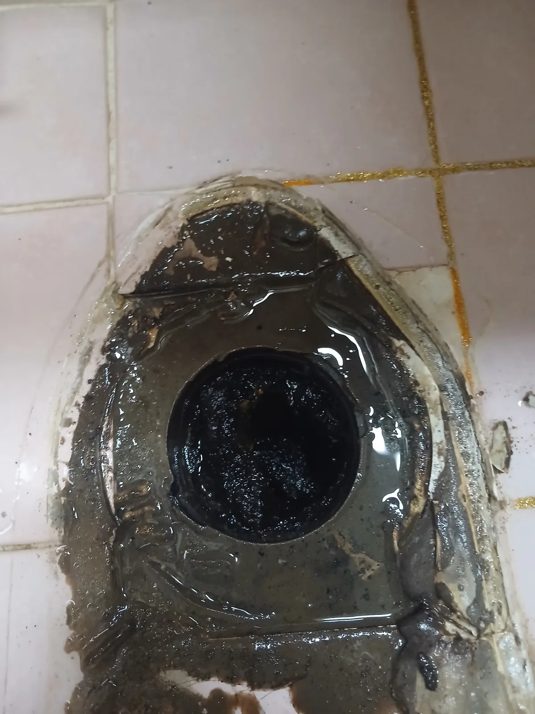

시흥시 하상동 변기막힘, 현장 도착 후 진단
이번 시흥시 하상동 변기막힘 현장에서 가장 중요한 단서는 약 일주일 동안 반복됐던 ‘변기 꿀렁거림’이었습니다.
특히 변기를 사용하지 않았는데도 물이 움직였다는 설명을 듣고 단순히 변기 내부에 이물질이 걸린 상황만을 생각하지 않았습니다. 연결된 오수관의 배수 흐름에 문제가 있을 가능성을 예상했고, 변기 탈거와 오수관 작업까지 필요할 수 있다는 점을 먼저 설명했습니다.
실제로 변기를 탈거하자 예상했던 것처럼 오수관에 오수가 정체돼 있었고 검고 끈적한 오염물도 확인됐습니다.
완전히 막힌 뒤 무작정 장비를 사용하는 것이 아니라, 그전에 나타난 증상을 통해 문제 범위를 예상하고 실제 배관 상태를 확인한 뒤 적합한 작업 방법을 선택하는 것이 중요합니다.
1단계: 증상 확인과 필요한 장비 작업
먼저 변기를 탈거해 하부 오수관을 직접 확인할 수 있도록 작업 공간을 확보했습니다.
오수관 내부에는 정체된 오수와 함께 검은색의 찐득한 점성 오염물이 상당량 붙어 있었습니다. 단순히 변기 내부만 뚫어서는 해결하기 어려운 상태였기 때문에 오수관 자체를 작업 대상으로 잡았습니다.
RIDGID FlexShaft를 오수관 내부로 투입해 막힘 구간을 작업하면서 배관 내부에 남아 있던 오염물과 찌꺼기를 제거했습니다. 실제 작업 과정에서도 검게 변한 오염물이 계속 빠져나오는 것을 확인할 수 있었습니다.

2단계: 원인 구간 처리와 정상 작동 확인
FlexShaft 작업 후에는 Milwaukee AirSnake를 이용해 추가 통수 작업을 진행했습니다.
오수관 내부에 남아 있던 막힘과 오염물을 충분히 제거하고 배수 흐름을 확인했습니다. 하나의 장비만 반복해서 사용하는 것이 아니라 현장에서 확인되는 배관 상태에 따라 적합한 장비와 작업 방법을 선택해 문제를 해결했습니다.
처음 증상에서 예상했던 오수관 문제를 변기 탈거 후 직접 확인하고, 전문 장비를 이용해 막힘 구간과 잔존 오염물을 제거하면서 당일 정상적인 배수 상태를 확보했습니다.

작업 결과와 재발 방지 안내
이번 시흥시 하상동 변기막힘은 약 일주일 동안 반복됐던 변기 꿀렁거림을 통해 하부 오수관 문제를 예상했고, 실제 변기를 탈거한 결과 오수 정체와 검고 찐득한 오염물이 확인된 사례입니다.
특히 변기막힘 때문에 뚫어뻥 같은 배수관 막힘 제거제를 사용하는 경우에는 한 가지를 꼭 기억해야 합니다.
뚫어뻥 같은 막힘 제거제는 배관 내부의 일부 이물질을 녹이거나 불려 물길을 다시 확보하는 데 도움을 줄 수 있습니다. 하지만 물이 내려가기 시작했다고 해서 배관 내부의 찌꺼기까지 모두 사라졌다고 볼 수는 없습니다.
막힘 제거제를 사용한 뒤 배수가 회복됐다면 충분한 양의 물을 흘려 느슨해지거나 분해된 찌꺼기와 잔존 오염물이 배관 밖으로 완전히 빠져나갈 수 있도록 하는 과정이 중요합니다.
충분한 통수가 이루어지지 않으면 느슨해진 찌꺼기와 기존 오염물이 배관 내부에 남아 다시 뭉치거나 다른 이물질과 엉기면서 배수불량과 재막힘으로 이어질 수 있습니다.
또한 변기를 사용하지 않았는데도 물이 꿀렁거리거나 수위가 움직이고, 평소와 다른 배수 소리가 반복된다면 뚫어뻥을 계속 추가하기보다 변기 하부와 오수관 상태를 점검하는 것이 좋습니다.
신라건축설비는 변기막힘을 단순히 변기 안에서만 판단하지 않습니다. 증상과 배관 구조를 바탕으로 문제 범위를 진단하고, 필요한 경우 변기 탈거부터 오수관 작업까지 직접 진행합니다. 이번 현장 역시 오수관 문제를 사전에 예상해 안내한 뒤 실제 상태를 확인했고, RIDGID FlexShaft와 Milwaukee AirSnake를 이용해 당일 해결했습니다. 서울·경기 지역의 변기막힘부터 오수관·공용배관처럼 보다 깊은 배관 문제까지 현장 상황에 맞춰 대응하고 있습니다.
최종 조치: 변기를 탈거해 오수관에 직접 접근한 뒤 RIDGID FlexShaft를 투입해 막힘 구간과 배관 내부에 남아 있던 오염물을 제거했습니다.이후 Milwaukee AirSnake를 이용한 추가 통수 작업을 진행하고, 작업 과정에서 빠져나온 검은 점성 오염물과 각종 찌꺼기를 제거했습니다.오수관의 배수 흐름을 다시 확인한 뒤 변기를 정상적으로 사용할 수 있도록 마무리해 당일 해결했습니다.
현장 방문 전 확인하는 비용과 작업 범위
신라건축설비는 현장 증상과 배관 구조를 확인한 뒤 필요한 작업과 예상 비용을 안내합니다. 단순 관통으로 해결되는지, 배관내시경·석션·고압세척 또는 변기 탈거가 필요한지는 현장 상태에 따라 달라집니다. 출장비와 야간 작업비, 추가 장비 비용이 발생할 수 있는 경우 작업 전에 먼저 설명하고 동의를 받은 범위에서 진행합니다.
업체를 선택할 때 확인할 사항
무조건적인 ‘0원’ 표현보다 실제 작업 범위, 추가 비용 조건, 사용 장비와 사후 대응 기준을 확인하는 것이 중요합니다. 해결되지 않았을 때의 비용 기준과 작업 후 동일 증상 발생 시 점검 범위를 사전에 문의해두면 불필요한 분쟁을 줄일 수 있습니다.
시흥시 변기막힘 자주 묻는 질문
변기막힘은 왜 반복되나요?
시흥시 하상동 현장처럼 시흥시 하상동 아파트에서 약 일주일 전부터 변기에 이상한 전조증상이 나타났습니다. 변기를 사용하지 않았는데도 변기 안의 물이 간헐적으로 ‘꿀렁꿀렁’ 움직이는 현상이 반복됐습니다.일반적인 변기막힘처럼 물을 내릴 때만 문제가 나타나는 것이 아니라 아무것도 사용하지 않는 상황에서도 변기 수위와 물의 움직임에 변화가 있었다는 점을 중요하게 봤습니다.이런 증상은 단순히 변기 내부에 휴지나 이물질이 걸린 경우뿐 아니라 변기 아래쪽 오수관의 배수 흐름에 문제가 생겼을 때도 나타날 수 있어 빠른 점검이 필요한 상황이었습니다. 증상은 원인이 현장마다 다를 수 있습니다. 변기 내부 이물질뿐 아니라 하부 오수관 막힘이나 배관 상태 때문에 반복될 수 있습니다. 같은 변기막힘이 재발하면 막힌 위치와 원인을 다시 확인하는 것이 중요합니다.
변기 물이 안 내려가거나 역류하면 변기뚫는업체를 불러야 하나요?
물이 천천히 내려가거나 수위가 차오르고 변기역류가 반복되면 단순 뚫어뻥보다 전문 장비 점검이 필요한 경우가 있습니다. 현장에서는 증상과 배관 구조를 먼저 확인합니다.
변기 이물질 막힘은 변기를 탈거해야 하나요?
물티슈·청소포·플라스틱·음식물처럼 변기 트랩에 걸린 이물질은 위치에 따라 변기 탈거가 필요할 수 있습니다. 무조건 탈거하지 않고 먼저 막힘 위치를 판단합니다.
변기뚫는업체는 어떤 장비로 작업하나요?
현장 상태에 따라 석션, 에어건, 배관내시경, 변기 탈거 등을 사용합니다. 하부 오수관 문제라면 변기만 뚫는 작업보다 배관 구간 확인이 중요합니다.
변기막힘 비용은 어떻게 정해지나요?
단순 관통인지, 이물질 제거와 변기 탈거가 필요한지, 오수관이나 공용배관 작업이 필요한지에 따라 달라집니다. 추가 장비나 작업이 필요하면 진행 전에 범위와 비용을 안내합니다.
변기에서 냄새가 나거나 물이 자주 차오르는 것도 막힘과 관련 있나요?
악취나 수위 이상이 항상 막힘 때문인 것은 아니지만 배수 불량, 오수관 상태, 연결부 문제와 함께 나타날 수 있습니다. 반복되면 현장 점검으로 원인을 구분해야 합니다.
변기막힘 서울·경기 출동지역
신라건축설비는 시흥시 하상동 현장을 포함해 서울 25개 구와 경기도 31개 시·군의 배관 문제를 상담합니다. 현장 거리와 기사 배정 상황에 따라 출동 가능 여부를 먼저 안내드립니다.
서울 전 지역
강남구 · 강동구 · 강북구 · 강서구 · 관악구 · 광진구 · 구로구 · 금천구 · 노원구 · 도봉구 · 동대문구 · 동작구 · 마포구 · 서대문구 · 서초구 · 성동구 · 성북구 · 송파구 · 양천구 · 영등포구 · 용산구 · 은평구 · 종로구 · 중구 · 중랑구
경기도 주요 출동지역
수원시 · 용인시 · 고양시 · 화성시 · 성남시 · 부천시 · 남양주시 · 안산시 · 평택시 · 안양시 · 시흥시 · 파주시 · 김포시 · 의정부시 · 광주시 · 하남시 · 광명시 · 군포시 · 양주시 · 오산시 · 이천시 · 안성시 · 구리시 · 의왕시 · 포천시 · 양평군 · 여주시 · 동두천시 · 과천시 · 가평군 · 연천군